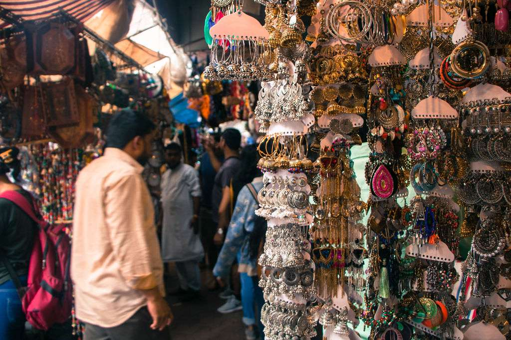
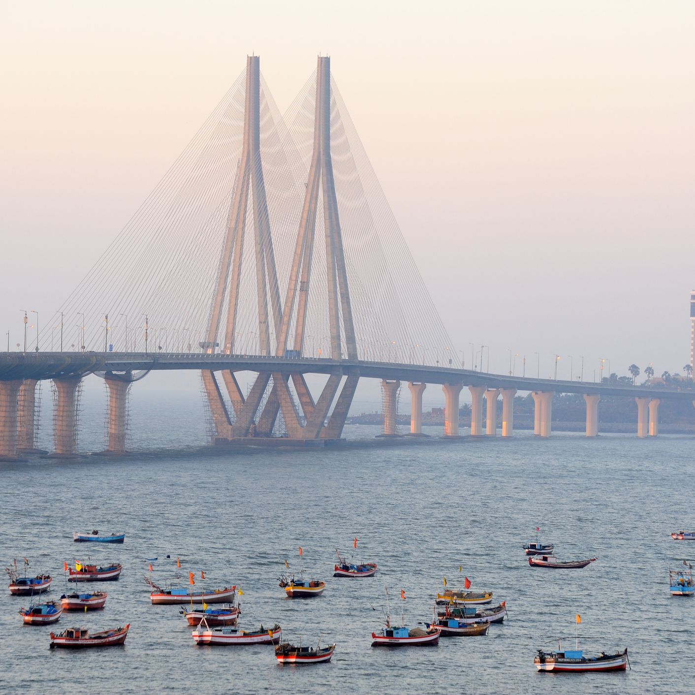
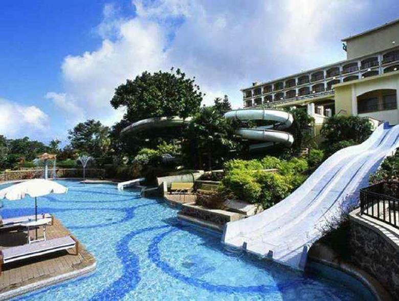
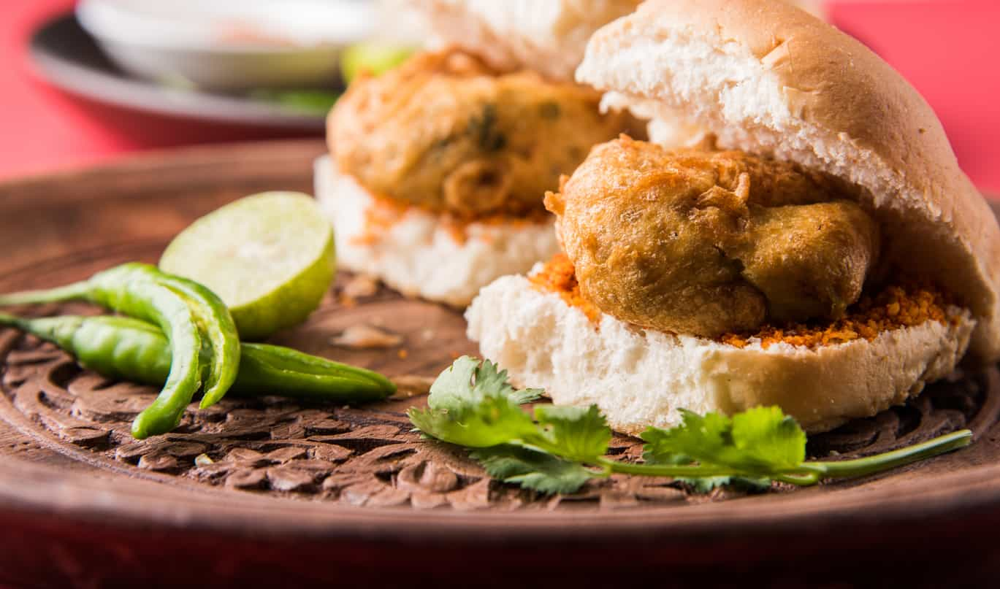

Asia > India > Maharashtra > Mumbai
ABOUT MUMBAI
Mumbai (formerly known as Bombay), India, is famous for its chaotic
streets. For bargains and people-watching, outdoor bazaars top the
list of attractions. Popular waterfront destinations are Marine Drive,
where visitors go to watch the sun set over the Arabian Sea, and
the carnival-like Juhu Beach. More sightseeing options are the Gandhi
Museum, in the leader's former home, and the cave temples of Elephanta
Island. For tranquillity, Mumbai has many religious sites, lakes and parks.
ESSENTIALS MUMBAI

~ DO ~
places to see , ways to wander and
signature experience

~ STAY ~
a mixture of the charming , modern and
tried and true

~ EAT ~
can't miss spots to dine , drink
and feast